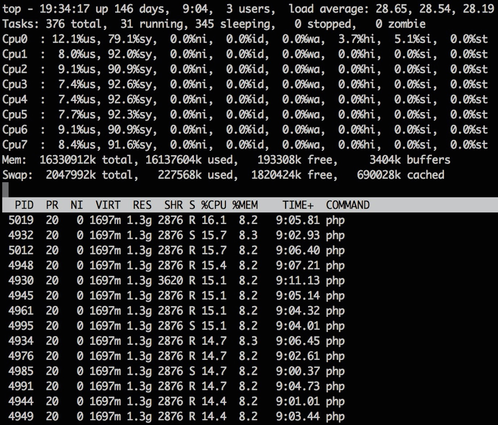
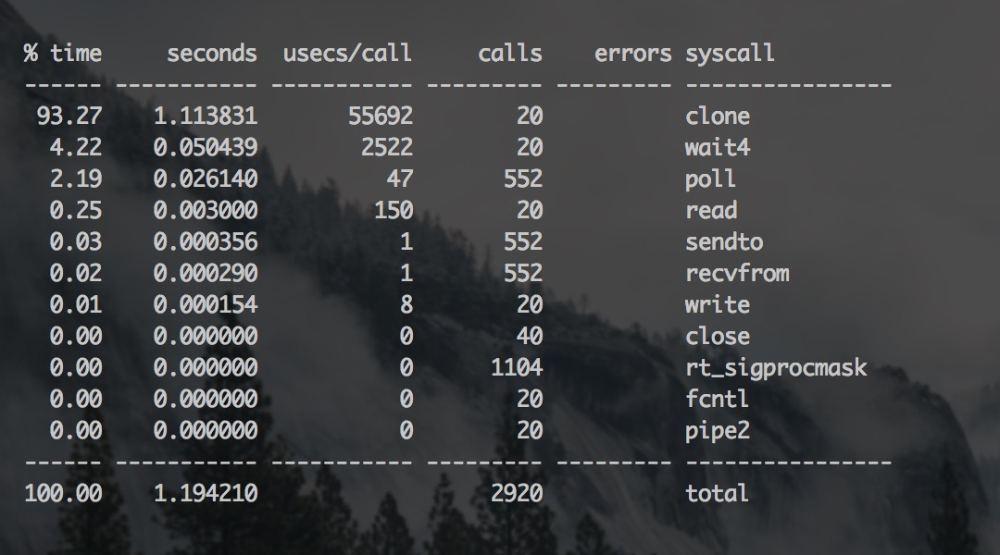
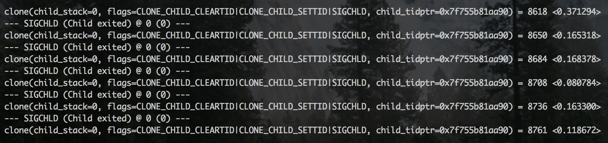

手把手教你用 strace 诊断问题
| 2015-10-21 13:07 收藏: 4
早些年，如果你知道有个 strace 命令，就很牛了，而现在大家基本都知道 strace 了，如果你遇到性能问题求助别人，十有八九会建议你用 strace 挂上去看看，不过当你挂上去了，看着满屏翻滚的字符，却十有八九看不出个所以然。本文通过一个简单的案例，向你展示一下在用 strace 诊断问题时的一些套路。
如下真实案例，如有雷同，实属必然！让我们看一台高负载服务器的 top 结果：

top
技巧：运行 top 时，按「
1」打开 CPU 列表，按「shift+p」以 CPU 排序。
在本例中大家很容易发现 CPU 主要是被若干个 PHP 进程占用了，同时 PHP 进程占用的比较多的内存，不过系统内存尚有结余，SWAP 也不严重，这并不是问题主因。
不过在 CPU 列表中能看到 CPU 主要消耗在内核态「sy」，而不是用户态「us」，和我们的经验不符。Linux 操作系统有很多用来跟踪程序行为的工具，内核态的函数调用跟踪用「strace」，用户态的函数调用跟踪用「ltrace」，所以这里我们应该用「strace」：
shell> strace -p <PID>不过如果直接用 strace 跟踪某个进程的话，那么等待你的往往是满屏翻滚的字符，想从这里看出问题的症结并不是一件容易的事情，好在 strace 可以按操作汇总时间：
shell> strace -cp <PID>通过「c」选项用来汇总各个操作的总耗时，运行后的结果大概如下图所示：
" width="800" height="444">
strace -cp
很明显，我们能看到 CPU 主要被 clone 操作消耗了，还可以单独跟踪一下 clone：
shell> strace -T -e clone -p <PID>通过「T」选项可以获取操作实际消耗的时间，通过「e」选项可以跟踪某个操作：
" width="800" height="189">
strace -T -e clone -p
很明显，一个 clone 操作需要几百毫秒，至于 clone 的含义，参考 man 文档：
clone() creates a new process, in a manner similar to fork(2). It is actually a library function layered on top of the underlying clone() system call, hereinafter referred to as sys_clone. A description of sys_clone is given towards the end of this page.
Unlike fork(2), these calls allow the child process to share parts of its execution context with the calling process, such as the memory space, the table of file descriptors, and the table of signal handlers. (Note that on this manual page, “calling process” normally corresponds to “parent process”. But see the description of CLONE_PARENT below.)
简单来说，就是创建一个新进程。那么在 PHP 里什么时候会出现此类系统调用呢？查询业务代码看到了 exec 函数，通过如下命令验证它确实会导致 clone 系统调用：
shell> strace -eclone php -r 'exec("ls");'最后再考大家一个题：如果我们用 strace 跟踪一个进程，输出结果很少，是不是说明进程很空闲？其实试试 ltrace，可能会发现别有洞天。记住有内核态和用户态之分。